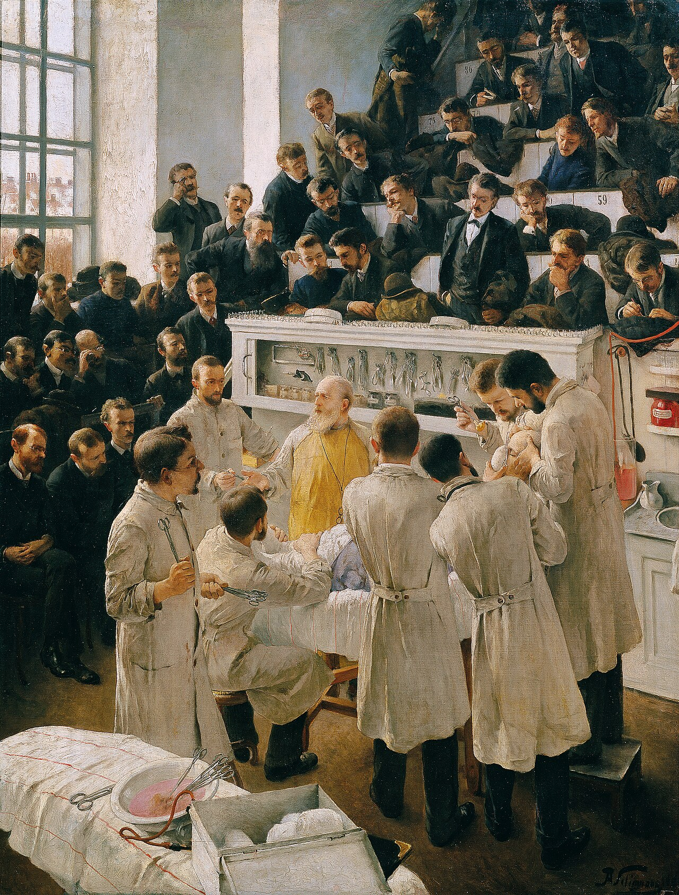

A. F. Seligmann, Der Billroth'sche Hörsaal (c. 1890) · Belvedere, Wien
JEJU NATIONAL UNIVERSITY HOSPITAL
제주대학교 신경외과
수련 로그북
수련 로그북 입력
(전공의 작성)
수술·시술 참여 기록 · EPA 자가평가 · 주간보고
수술·시술 피드백 입력
(지도전문의 작성)
체크리스트 기반 · 1분 이내
면담·지도기록 입력
(지도전문의 작성)
개별면담 · 회진지도 등 기타
버튼에 마우스를 올리거나, 그림 속 인물을 직접 클릭해도 해당 메뉴로 이동합니다.
문의: 책임지도전문의 김준회
이 페이지를 즐겨찾기에 등록 부탁드립니다.
관리 메모
·
면담 준비 보고서